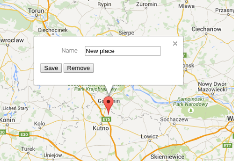

4a. Wyświetl listę miejsc (markerów) obok mapy
Użyj tablicy lub Set, żeby przechowywać modele

4b. Zmień Set/tablicę miejsc na własną klasę kolekcji.
Skorzystaj z Symbol.iterator, żeby zapewnić API spójne z innymi kolekcjami.
4c. Dodaj możliwość edycji markerów na mapie extra
Edycja może dotyczyć położenia (drag) lub nazwy. Możesz dodać pole opisu. Zmiana powinna być widoczna również na liscie.

4d. Zmień komunikację między mapą a listą na eventy. extra
Potrzebujesz obieku, który będzie przechowywał listę handlerów i odpalał akcje
4e. Dodaj możliwość usunięcia markera z poziomu listy extra